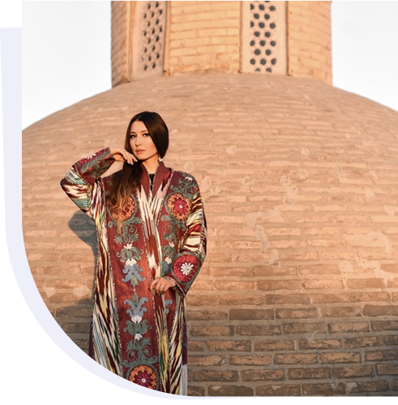

<div class="w-full py-20 flex justify-center items-center max-[1000px]:py-2">
  <div
    class="w-full flex justify-between max-[400px]:justify-center items-center max-[1000px]:flex-col max-w-7xl px-4"
  >
    <div class="flex flex-col gap-3">
      <p
        class="text-[#1D1D1D] text-5xl font-bold max-w-[490px] leading-normal max-[1000px]:text-[14px]"
      >
        Hey, I'm Albina Yildiz-Hartner
      </p>
      <p
        class="text-[#0A0A0AB2] text-[28px] leading-9 max-w-2xl max-[1000px]:leading-5 max-[1000px]:text-[14px]"
      >
        I am an internationally-experienced, highly motivated, and multifaceted
        educational project manager, with a proven track record of success.
        Dedicated to advancing the field of education, I am driven to transform
        innovative ideas into tangible educational initiatives.
      </p>
    </div>

    
  </div>
</div>
